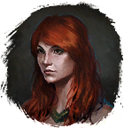
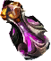
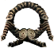
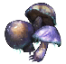

Ворлинский Дукат
Предметы / Ресурсы
Открыть в интерактивной вики →
| Вес | 0 |
|---|---|
| Цена | 500 |
Описание
Монета, находящаяся в обращении только в Беирне. Власти и администрация Империи Халигарда в лучшем случае игнорируют факт ее использования. Однако стоит учитывать, что какой-то жадный чинуша может ее конфисковать, поэтому лучше использовать ее только в Беирне.
Получить можно за задание
Используется для: покупки Реол
Реол  Эфирная лампа и
Эфирная лампа и
Получить можно за задание

Рэни "Кровь Йети" (100x), убивая мобов, боссов, чемпионов Беирна.Используется для: покупки
Реол 
Двигг
Обруч Переноса, дополнительного опыта дрифам заЭфирная лампа и 
Наскальные грибы и т.д.| Монета, которая ходит только на Беирне. Власти Галигардской империи в лучшем случае закрывают глаза на её использование. Но её может конфисковать какой-нибудь жадный чиновник, так что лучше расплачиваться ею только на Беирне. |
Способы получения
|